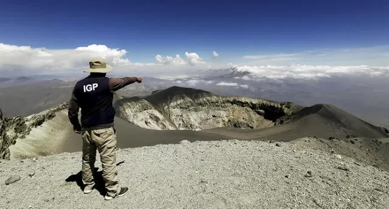
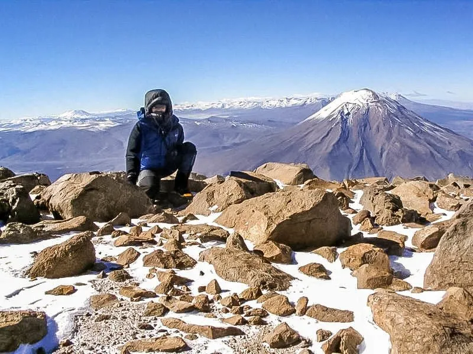
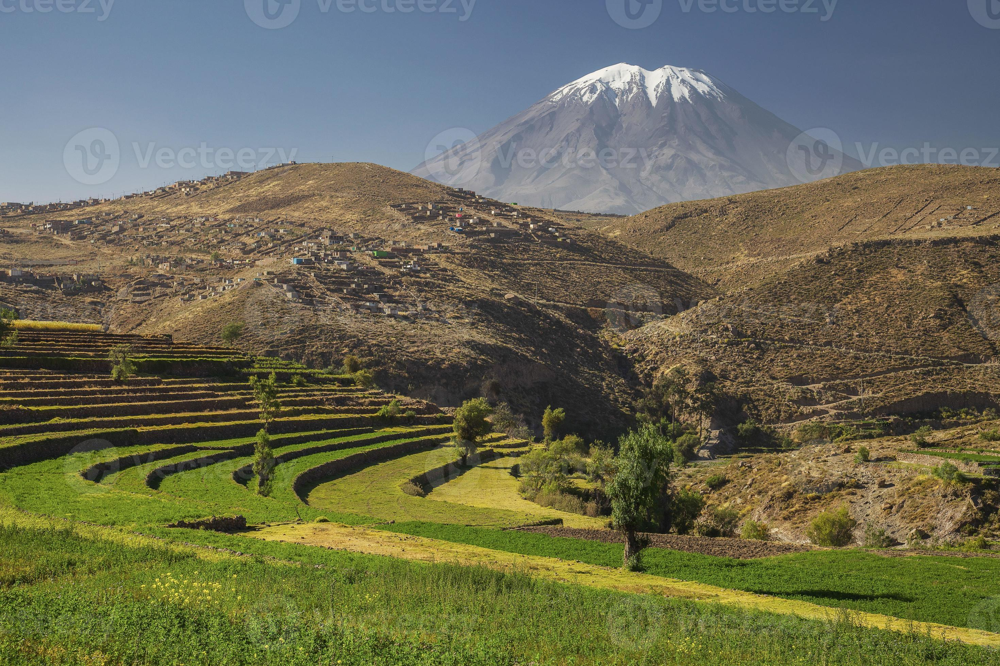

Volcán Misti: El guardián de Arequipa
El Volcán Misti, con su imponente silueta cónica, es uno de los íconos naturales más representativos de Arequipa. Ubicado a 5,822 metros sobre el nivel del mar, es un destino ideal para los amantes del senderismo y la aventura, ofreciendo vistas espectaculares de la ciudad y de los paisajes andinos.
Historia
El Misti es un volcán activo cuya última erupción registrada ocurrió en el siglo XV. Ha sido un sitio de importancia religiosa y cultural para las civilizaciones prehispánicas, como los incas, quienes realizaban rituales en sus faldas.



Horarios y Ubicación
- Ubicación: Cercanías de Arequipa, Perú.
- Horarios de visita: Se recomienda iniciar el ascenso temprano en la mañana.
- Costo de entrada: Acceso libre, pero es recomendable contratar guías.
Consejos para Visitantes
- Prepárate físicamente: La subida es exigente y requiere buena condición física.
- Contrata un guía: Es recomendable ir acompañado por un guía experimentado para mayor seguridad.
- Lleva equipo adecuado: Ropa abrigadora, calzado resistente y suficiente agua son esenciales.
- Aclimatación: Antes de ascender, es importante pasar unos días en Arequipa para acostumbrarse a la altitud.
- Respeta el entorno: No dejes basura y sigue las rutas establecidas para proteger el ecosistema.